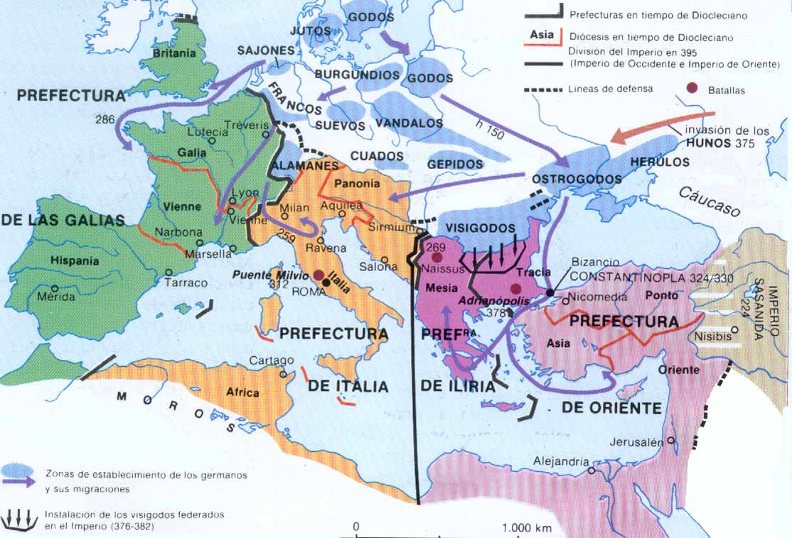

Tema 3: Hacia un cristianismo de Estado (s. IV)
Constantino y el triunfo del cristianismo
División del Imperio en dos partes: Oriente y Occidente.
Con Diocleciano se instaura un nuevo sistema de gobierno: la tetrarquía, con dos gobernantes en Oriente y dos en Occidente (un Augusto y un césar).
Cuando fallece en Occidente el emperador Constancio Cloro le sucede Constantino, su hijo, y no se respeta la idea inicial de la tetrarquía.

| Oriente | Occidente |
|---|---|
| Diocleciano Galerio |
Maximiano Constancio Cloro |
| Licinio Maximino Daya |
Constantino (306) Majencio |
En el año 303, Diocleciano decreta una persecución general, la más duradera y cruel. A partir de ese año, se emiten cuatro edictos que recrudecen progresivamente las medidas represivas contra los cristianos: destrucción y confiscación de los lugares de culto y de los libros sagrados, torturas, cárcel y la exigencia (304) a todos los habitantes del Imperio de realizar un sacrificio en honor de los dioses y de los emperadores. Legalmente, la persecución cesó en 311, aunque fue más suave y más breve en Occidente. En Oriente, Galerio emitió un edicto de tolerancia poco antes de morir, reconociendo a los cristianos el derecho a ejercer libremente su religión y a recuperar los bienes confiscados.
Edicto de Nicomedia, 311:
Entre todo lo otro que por el bien y la prosperidad de la cosa pública dispusimos, quisimos en el pasado armonizar todas las cosas con el derecho y el orden público romano tradicional. También buscamos que, incluso los cristianos, que habían abandonado la religión de sus ancestros, se reintegrasen a la razón y al buen sentido. En efecto, por algún motivo, la voluntad de los cristianos fue por su propia obra plagada de tal manera y fueron presa de tal tamaña estupidez, que abandonaron las instituciones ancestrales, que quizás sus mismos antepasados habían instituido. En su lugar, por su propio capricho y como bien les pareció, adoptaron y siguieron leyes propias congregándose en varios lados como grupos separados. Así, cuando con tal finalidad pusimos en vigor nuestras leyes para que se conformasen a las instituciones tradicionales, muchos se sometieron por el miedo, otros fueron incluso abatidos. Aun así muchos perseveraron en su propósito y constatamos que no observaban la reverencia a los dioses de la religión debida ni tampoco aquella del Dios de los cristianos. Habida cuenta de nuestra gran clemencia e inveterada costumbre de indulgencia que ejercitamos frente a todos los hombres, creemos que debemos extenderla también a este caso. De tal modo pueden nuevamente los cristianos reconstituirse así como sus lugares de culto, siempre que no hagan nada en contra del orden público. Por medio de otra carta indicaremos a los magistrados como deben conducirse. En razón de esta, nuestra benevolencia, deberán orar por nuestra salud y la del imperio, para que el imperio pueda continuar incólumne y para que puedan vivir en seguridad en sus hogares. – Lactancio, DMP, 34.
Lactancio pretende demostrar que todas las autoridades paganas contrarias al cristianismo que persiguieron a los cristianos fueron represaliadas por la providencia divina con muertes horribles en medio de sufrimientos y tormentos.
Tras su muerte, la persecución fue reanudada por Maximino Daya hasta su muerte en 313 a manos de Licinio.
La victoria del puente Milvio
Constantino accede al poder en el año 306, nombrado augusto por su propio ejército en York. Desde ese momento intentó imponer su poder a Majencio. Se desató una guerra civil y en el 312 se produce la decisiva batalla de Puente Milvio, que consagra a Constantino como único gobernante en la parte occidental frente a Majencio.
El Puente Milvio era un antiguo puente de madera en mal estado. Cuando los soldados de Majencio cruzan el puente, éste se viene abajo y la mayoría de los soldados, incluido Majencio, son arrastrados y muertos por el Tíber.
Después en 324, en su enfrentamiento con Licinio (que había derrotado a Maximino Daya), Constantino vence en la batalla de Crisópolis, Nicomedia, convirtiéndose en emperador único.
Tenemos la información de esta batalla por Eusebio y Lactancio. Esta descripción hecha por parte de dos autores cristianos se ha cristianizado.
Versiones sobre la conversión de Constantino
Lactancio, De mortib. persec., 44, 5-6
Constantino fue advertido en sueños para que grabase en los escudos el signo celeste de Dios y entablase de este modo la batalla. Pone en práctica lo que se le había ordenado y, haciendo girar la letra χ con su extremidad superior curvada en círculo, graba el nombre de Cristo en los escudos. El ejército, protegido con este emblema, toma las armas.
Las dos primeras letras del nombre de Cristo son la χ y la ρ (en latín X y P). Si giramos la χι, nos queda el crismón: ☧.
Eusebio, panegirista de la corte, que en el 337 escribe la Vita Constantini alude a este espisodio: también menciona esta premonición en Historia Ecclesiastica; en esta, no habla de una visión celeste.
Eusebio, Vit. Const., 1, 28-29
[...] vio con sus propios ojos, en pleno cielo, superpuesto al sol, un trofeo en forma de cruz, construido a base de luz y al que estaba unida una inscripción que rezaba: "Con éste vencerás" (ἐν τούτῳ νίκα/in hoc signo vinces) [...] En sueños vio a Cristo, hijo de Dios, con el signo que apareció en el cielo y le ordenaba que una vez se fabricara una imitación del signo observado en el cielo se sirviera de él como bastión en las batallas contra los enemigos.
Sin embargo, no todas las versiones que nos han llegado son de cristianos. Tenemos versiones paganas que no se centran en cristianizar el relato.
- Zósimo, s. V. En su Historia Nova (2, 29) dice el hecho de que Constantino decidiera atribuir su victoria al dios cristiano no se debe a que éste se le hubiera aparecido, sino a que el propio emperador decidió convertirse al crmo debido a los hechos sangrientos que se produjeron en la corte como consecuencia de sus decisiones.
Zósimo cuenta que Constantino asesina a Fausta; que recurre a los sacerdotes politeístas en busca de un rito de purificación de tal culpa; que al no encontrarlo, llega un sabio venido de Egipto (con toda probabilidad, Osio de Córdoba) y le asegura que la doctrina cristiana le ofrece el perdón de todo pecado.
Sea como fuere, parece que los datos históricos indican que sólo en el lecho de muerte Constantino fue bautizado, paradójicamente por un obispo arriano: Eusebio de Nicomedia. Lo que quiere contar Zósimo es que si Constantino se convierte, sinceramente o no, es sólo porque el dios cristiano será el único que le perdonará sus muchos y terribles pecados, y no porque haya habido una intervención divina previa como cuentan los cristianos.
El Edicto de Milán y sus consecuencias
Licinio y Constanino se reúnen en Milán y para aprobar una serie de acuerdos que reconocen la libertad de culto tras las persecuciones anteriores llevadas a cabo por las autoridades paganas.
Hasta ese momento, los cultos politeístas eran completamente aceptados. Las religiones mistéricas se consideraban de ábito privado, eran religiones orientales, con unos cultos diferentes pero que no interferían en los tradicionales grecorromanos. La única religión monoteísta, el judaísmo, era considerada una religión étnica seguida únicamente por los judíos. Por tanto, hasta que el cristianismo comienza a difundirse, no había problemas de convivencia religiosa, no había intolerancia. El carácter universalista y proselitista del cristianismo causó los choques.
El conjunto de acuerdos a los que llegaron Constantino y Licinio en el 313 se conoce como Edicto de Milán, que no fue un Edicto, una disposición legal. Estas disposiciones se nos han conservado por dos autores cristianos: - En latín por Lactancio en DMP - En griego por Eusebio de Cesarea en la HE. Los cristianos pasan a disponer de total libertad para practicar su culto y la Iglesia se puede desarrollar tranquilamente.
Estos acuerdos entre los emperadores de las dos partes del Imperio son un pacto interesado de colaboración entre la Iglesia y el Estado. El Estado reconoce a la Iglesia la propiedad de sus bienes, la libertad para desplegar su culto, disponer de nuevos bienes... A cambio, la Iglesia deberá permitir al Estado, sobre todo a la figura del emperador, intervenir y participar en las decisiones de tipo eclesiástico.
Aunque puede parecer que la parte más beneficiada es la Iglesia, más adelante se verá como el Estado sacó más partido de estas medidas.
Nota: la cuestión constantiniana.
Cuando Constantino se convierte en emperador único, decide trazar una especie de monoteísmo sincrético entre el dios Sol y el dios cristiano que no sabemos exactamente cuándo abandonó. Paulatinamente se va inclinando en favor del cristianismo y se produce una asimilación entre el poder religioso y el civil (entre la Iglesia y el Estado: un único Dios y un único emperador = monoteísmo en ambos lados), o sea, una concepción teocrática del Estado: el cesaropapismo, que consiste en que el emperador debe intervenir en todos los asuntos de la Iglesia para procurar el bienestar de su pueblo en los planos político y religioso.
Las reformas de Constantino
Innovaciones literarias
- La oratoria. Discursos de aparato/epidícticos, grandilocuentes, ostentosos... Esta práctica seguía cultivándose, era la última fase de la educación de los jóvenes: convencer hablando. Los cristianos dan especial importancia a estos discursos porque se pronuncian en las grandes celebraciones litúrgicas.
- La exégesis bíblica: género nuevo. La mayoría de los cristianos no sabían leer y les costaba muchísimo entender lo que el NT contenía, de ahí que los grandes autores se dedicaran a interpretar los textos y a hacer exégesis de ellos. [a.moron: en algunas clases se dice que el mensaje cristiano es populista, que lo entiende todo el mundo, que no requiere interpretación, que es accesible, etc. Aquí la exégesis nace para accesibilizar el contenido del NT?]
- Escuela alejandrina (Clemente y Orígenes): alegorizante.
- Escuela antioquena (Juan Crisóstomo): literal.
- Historiografía eclesiástica: otro género completamente nuevo > Eusebio de Cesarea (de Palestina). Fue el autor de la primera Historia de la Iglesia (Historia Ecclesiastica), y escribió la Vita Constantini, totalmente encomiástica, en que presenta al emperador como un hombre completamente perfecto, como el príncipe ideal y el imitador de Dios, y cuyo poder derivaba de él. Eusebio escribe esta historia recopilando las fuentes primarias (ἱστορία), lejos de buscar causas y consecuencias de los hechos.
- El género epistolar: este género no es nada nuevo. En el NT están las cartas de Pablo, de Pedro y de Juan. Predominio de las normas retóricas: typoi clásicos. De la mayoría de los autores cristianos, tanto de LG como de LL, conservamos muchísimas colecciones epistolares. Un género muy cultivado para comunicar ideas, intentar resolver conflictos o simplemente conocer/comunicar de la vida...
- Tratados doctrinales. Gran producción literaria debido a las controversias doctrinales y cristológicas/trinitarias; difíciles de entender salvo por teólogos, etc.
- Cánones conciliares: como consecuencia de los conflictos doctrinales y disciplinares se convocan estos concilios. Las actas se convierten en cánones con medidas → Derecho canónico.
- Literatura apologética: se sigue cultivando, no para defenderse de las autoridades paganas, sino de los intelectuales (Porfirio, Juliano, etc).
- Literatura hagiográfica y ascética: Vida de Antonio de Atanasio de Alejandría. Desarrollo del monacato durante el s. IV.
En estos ocho enunciados se introducen las innovaciones literarias que conllevó la política de Constantino. Sin embargo, el favorecimiento del cristianismo, sobre todo del clero, y la actitud evergética frente a algunas obras supusieron también enormes cambios de tipo social y político.
Privilegios eclesiásticos y evergesía imperial
Privilegios eclesiásticos
- Exención de cargas fiscales y de servicios públicos al clero. Esto supone libertad económica y laboral para dedicarse a los asuntos de la Iglesia.
- Capacidad para la Iglesia de recibir donaciones y herencias de los laicos.
- Concesión de la audientia episcopalis, la autoridad episcopal para ejercer la justicia: los jueces civiles debían reconocer la total capacidad por parte de los obispos para juzgar a los ciudadanos y estos, por su parte, podían elegir ser juzgados por sus causas pendientes tanto por un obispo como por un juez. En cualquier caso, la sentencia dictada por el obispo tenía carácter ejecutivo y no se podía modificar.
- Declarar festivo el día del sol (dies solis), que pasó a ser el dies dominicus.
- Celebración del nacimiento de Jesús el 25 de diciembre, en lugar del nacimiento del sol (solsticio de invierno).
- Ayuda económica a la Iglesia para la restauración de los edificios de culto cristianos y subvención para edificar suntuosas basílicas en las ciudades más importantes del Imperio: Roma, Jerusalén, Belén y Constantinopla. Vd. Carta de Constantino a Anulino en Eusebio, HE X, 5, 15-17 y 7, 1-2.
Hay evidencia de estas actitudes y medidas favorables hacia el cristianismo por parte de Constantino en el Codex Th. (XVI, 2, 4) y en el C. Iust. (III, 12, 2). También en Vit. Const. (IV, 18-28).
Evergetismo imperial
Eusebio, V. C., III, 25-48
Se le ocurrió pensar que era su deber hacer que el benedictísimo lugar de la resurrección del Salvador en Jerusalén llegara a ser eximio y venerable. Ordenó construir un edificio dedicado a la oración [...] Al obispo Macario, que por entonces estaba al frente de la comunidad de Jerusalén envió un escrito expresándose en estos términos: Es preciso que tu solicitud disponga y provea de toda cosa necesaria, de tal modo que la basílica resulte mejor que las de otros sitios.
| Ciudad | Templo |
|---|---|
| Belén | Iglesia de la Natividad |
| Jerusalén | Basílica del Sto. Sepulcro Basílica del Monte de los Olivos |
| Constantinopla | Iglesia de los Santos Apóstoles |
| Roma | Basílica de S. Pablo extramuros Basílica de S. Pedro del Vaticano (también e.muros) Basílica de S. Juan de Letrán (i.muros) |
Constantino se denominó el decimotercer apóstol. Su evergesía contribuyó de manera substancial a cristianizar la topografía del IR.
Los sucesores de Constantino
Los Sucesores de Constantino en el Imperio Romano

Resumen de Emperadores y Periodos de Gobierno:
| Emperador | Periodo | Región Gobernada |
|---|---|---|
| Constantino | 324-337 | Todo el Imperio |
| Constancio II | 337-361 | Oriente |
| Constante | 337-350 | Occidente |
| Constantino II | 337-340 | Occidente |
| Magnencio (Usurpador) | 350-353 | Occidente |
Eventos Clave:
-
337 d.C.: A la muerte de Constantino, sus hijos Constancio II, Constante y Constantino II se convierten en coemperadores. Constancio II gobierna en el Oriente y Constante en el Occidente.
-
350 d.C.: Magnencio asesina a Constante y usurpa el poder en el Occidente durante tres años.
-
353 d.C.: Constancio II derrota a Magnencio y unifica el gobierno del Imperio, gobernando solo hasta el año 361.
Creencias Religiosas:
- Constancio II favorecía el arrianismo.
- Constante era partidario del credo niceno.
Políticas Religiosas:
- Constantino fue bastante tolerante con respecto a las prácticas paganas, limitándose a prohibir la magia en el ámbito privado.
- A partir de Constancio II, y luego con Valentiniano y Valente (con una excepción durante el reinado de Juliano), las políticas se volvieron más restrictivas contra las prácticas paganas.